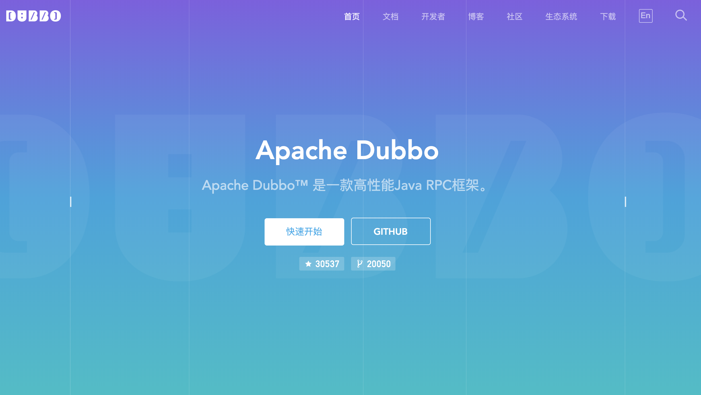

很多小伙伴所在的公司是基于Dubbo来构建技术栈的，日常开发中必不可少要写dubbo单测（单元测试），如果单测数据依赖已有的外部dubbo服务，一般是mock数据，如果数据比较复杂，其实mock数据也是一个不小的工作量。那有没有更好的单测方式来代替我们完成”mock“数据功能呢，这时可以借助dubbo telnet功能，获取真实数据用在单测中使用。
本文会先讨论如何使用基于dubbo telnet的代理工具类（DubboTelnetProxy），然后再讨论下mockito+DubboTelnetProxy如何进行多层次的单测，最后分析下如何让单测变得更加智能（比如自动注入等）。（ps：关于dubbo和mockito这里就不展开讨论了，具体可以参考对应资料~）
dubbo单测其实和非dubbo单测的流程是一样的，初始化待测试类和单测上下文，打桩然后调用，最后检查返回结果。比如我们常用mockito来跑单测，其简单的示例如下：
public class DubboAppContextFilterTest extends BaseTest {
private DubboAppContextFilter filter = new DubboAppContextFilter();
@Before
public void setUp() {
cleanUpAll();
}
@After
public void cleanUp() {
cleanUpAll();
}
@Test
public void testInvokeApplicationKey() {
Invoker invoker = mock(Invoker.class);
Invocation invocation = mock(Invocation.class);
URL url = URL.valueOf("test://test:111/test?application=serviceA");
when(invoker.getUrl()).thenReturn(url);
filter.invoke(invoker, invocation);
verify(invoker).invoke(invocation);
String application = RpcContext.getContext().getAttachment(DubboUtils.SENTINEL_DUBBO_APPLICATION_KEY);
assertEquals("serviceA", application);
}
}
上面代码copy于sentinel的单元测试代码。
在dubbo服务机器上，我们可以使用telnet连接dubbo服务，然后执行invoke命令来手动调用dubbo接口并获取结果，DubboTelnetProxy就是将这一系列的手动操作按照dubbo telnet格式固化到代码中。在具体讨论DubboTelnetProxy之前，先看下其有哪些功能，DubboTelnetProxy特点：
话不多说，先看下DubboTelnetProxy代码实现：
@AllArgsConstructor(access = AccessLevel.PRIVATE)
public class DubboTelnetProxy implements MethodInterceptor {
private String ip;
private Integer port;
@Override
public Object intercept(Object obj, Method method, Object[] params, MethodProxy proxy) throws Throwable {
if ("toString".equals(method.getName())) {
return obj.getClass().getName();
}
TelnetClient telnetClient = new TelnetClient();
telnetClient.setConnectTimeout((int) TimeUnit.SECONDS.toMillis(5));
telnetClient.connect(ip, port);
try {
InputStream in = telnetClient.getInputStream();
PrintStream out = new PrintStream(telnetClient.getOutputStream());
// 1. 发送dubbo telnet请求
StringBuffer request = new StringBuffer("invoke ");
request.append(method.getDeclaringClass().getTypeName()).append(".");
request.append(method.getName()).append("(");
request.append(StringUtils.join(Arrays.stream(params).map(JSON::toJSONString).collect(Collectors.toList()), ",")).append(")");
out.println(request.toString());
out.flush();
// 2. 结果处理
int len = 0;
byte[] buffer = new byte[512];
String result = "";
while (!result.contains(StringUtils.LF) && (len = in.read(buffer)) > 0) {
result += new String(ArrayUtils.subarray(buffer, 0, len));
}
result = StringUtils.substringBefore(result, StringUtils.LF);
if (StringUtils.isBlank(result) || !result.startsWith("{")) {
throw new RuntimeException(result);
}
// 3. 反序列化
return JSON.parseObject(result, method.getGenericReturnType());
} finally {
telnetClient.disconnect();
}
}
/**
* mockDubboIpPortFormat：配置格式为 -Dmock.dubbo.%s=127.0.0.1:8080，%s为当前dubbo接口的名字，class.getSimpleName()
*/
private final static String mockDubboIpPortPrefix = "mock.dubbo.";
public final static String mockDubboIpPortFormat = mockDubboIpPortPrefix + "%s";
/**
* dubbo telnet建造者
*/
public static class Builder {
final static String DEFAULT_IP = "127.0.0.1";
final static Integer DEFAULT_PORT = 20880;
/**
* 创建dubbo telnet代理
*/
public static <T> T enhance(Class<T> clazz) {
return enhance(clazz, null, null);
}
public static <T> T enhance(Class<T> clazz, String ip) {
return enhance(clazz, ip, null);
}
public static <T> T enhance(Class<T> clazz, Integer port) {
return enhance(clazz, null, port);
}
@SuppressWarnings("unchecked")
public static <T> T enhance(Class<T> object, String ip, Integer port) {
// 优先尝试从properties解析ip:port配置
String ipPort = System.getProperties().getProperty(String.format(mockDubboIpPortFormat, object.getSimpleName()));
if (StringUtils.isNotEmpty(ipPort)) {
String[] array = StringUtils.split(ipPort, ",");
ip = array[0];
port = Integer.valueOf(array[1]);
}
Enhancer enhancer = new Enhancer();
enhancer.setSuperclass(object);
enhancer.setCallback(new DubboTelnetProxy(ObjectUtils.defaultIfNull(ip, DEFAULT_IP), ObjectUtils.defaultIfNull(port, DEFAULT_PORT)));
return (T) enhancer.create();
}
}
}
DubboTelnetProxy的实现原理是使用cglib生成dubbo facade接口代理类，然后在代理类按照dubbo telnet格式拼接请求参数，最后获取返回结果并反序列化返回给应用程序。上述代码不足点是：目前每次dubbo调用都会新建telnet连接，对于单测来说是OK的，后续如果用于本地压测或者调用频繁测试场景，考虑复用连接或者使用netty client bootstrap方式避免每次都新建连接。
手动/自动指定dubbo服务IP地址：
@Test
public void test() {
// OrderQueryService为dubbo服务的一个API接口
System.setProperty("mock.dubbo.OrderQueryService", "127.0.0.1:20880");
OrderQueryService orderQueryService1 = DubboTelnetProxy.Builder.enhance(OrderQueryService.class);
OrderQueryService orderQueryService2 = DubboTelnetProxy.Builder.enhance(OrderQueryService.class, "127.0.0.1");
OrderQueryService orderQueryService3 = DubboTelnetProxy.Builder.enhance(OrderQueryService.class, "127.0.0.1", 20880);
OrderDTO result = orderQueryService1.query("订单号");
System.out.println(result);
}
日常开发中，可以使用mockito进行单测，保证代码质量。在mockito中，如果想让某个DubboTelnetProxy代理类注入到待测试中，可使用FieldUtils工具类进行属性注入。
使用DubboTelnetProxy + mockito示例如下：
@RunWith(MockitoJUnitRunner.class)
public class DemoServiceClientTest {
@InjectMocks
DemoServiceClient demoServiceClient;
@Before
public void before() throws IllegalAccessException {
FieldUtils.writeField(demoServiceClient, "demoServiceFacade",
DubboTelnetProxy.Builder.enhance(DemoServiceFacade.class), true);
}
@Test
public void hello() throws IllegalAccessException {
// 调用远程服务，DubboTelnetProxy方式
demoServiceClient.hello("world");
// 如果需要打桩，则使用Mock类
DemoServiceFacade demoServiceFacade = Mockito.mock(DemoServiceFacade.class);
Mockito.when(demoServiceFacade.hello("world")).thenReturn("zzz");
FieldUtils.writeField(demoServiceClient, "demoServiceFacade", demoServiceFacade, true);
Assert.assertEquals(demoServiceClient.hello("world"), "zzz");
}
}
@Component
public class DemoServiceClient {
@Resource
private DemoServiceFacade demoServiceFacade;
public String hello(String world) {
return demoServiceFacade.hello(world);
}
}
// dubbo api
public interface DemoServiceFacade {
String hello(String world);
}
要实现DubboTelnetProxy的自动注入，首先判断出来待测试类中的哪些属性需要构造DubboTelnetProxy或者对应实例，一般情况下如果属性是非本工程内的接口类型，就可以认为是dubbo api接口，进行构造DubboTelnetProxy并注入；如果属性是本工程内的接口类型，则在本工程内查找对应的实现类进行反射方式的属性注入（可使用org.reflections包中的Reflections工具类来获取接口下所有实现类）；如果属性是普通类，则直接反射构建对象注入即可，伪代码如下：
/**
* 默认的dubbo属性构造器，如果是非本工程内属性类型并且是接口类型，直接进行DubboTelnetProxy构建
*/
public static Function<Field, Object> DEFAULT_DUBBO_FC = field -> {
try {
assert Objects.nonNull(targetContext.get());
Class fieldClass = field.getType();
if (fieldClass.isInterface()) {
// 本工程内的加载其实现类，非本工程内的按照DubboTelnetProxy构建
if (!isSameProjectPath(targetContext.get().getClass(), fieldClass)) {
return DubboTelnetProxy.Builder.enhance(fieldClass);
} else if (fieldClass.getSimpleName().endsWith("Dao")) {
return Mockito.mock(fieldClass);
} else {
String packagePath = fieldClass.getPackage().getName() + ".impl.";
return Class.forName(packagePath + fieldClass.getSimpleName() + "Impl").newInstance();
}
} else if (isSameProjectPath(targetContext.get().getClass(), fieldClass)) {
return fieldClass.newInstance();
} else {
// 非工程内的类直接mock掉
return Mockito.mock(fieldClass);
}
} catch (Exception e) {
System.err.println("DEFAULT_DUBBO_FC 发生异常 field=" + field);
e.printStackTrace();
System.exit(-1);
return null;
}
};
针对待注入类有多个层次，比如测试类A中属性b类型是B，B中属性c类型是C等，那么在自动注入类A的所有属性时，需要递归进行，直至所有子类型的属性都构建完毕，示例伪代码如下：
void doWithFieldsInternal(@NonNull Object target, @Nullable Function<Field, Object> fc, @Nullable Boolean recursive) {
assert !(target instanceof Class);
// 默认fc回调直接调用默认无参构造方法
fc = ObjectUtils.defaultIfNull(fc, DEFAULT_FC);
recursive = ObjectUtils.defaultIfNull(recursive, false);
List<Object> fieldList = new ArrayList<>();
do {
Object finalTarget = target;
Function<Field, Object> finalFc = fc;
ReflectionUtils.doWithFields(finalTarget.getClass(), field -> {
Object value = finalFc.apply(field));
DubboReflectionUtils.setField(finalTarget, field, value);
if (Objects.nonNull(value) && DEFAULT_FF.matches(field)) {
fieldList.add(value);
}
}, filterField -> {
// 默认只注入非基本类型并且为null的属性
return DEFAULT_FF.matches(filterField) && DubboReflectionUtils.isNullFieldValue(finalTarget, filterField);
});
} while (recursive && !fieldList.isEmpty() && Objects.nonNull(target = fieldList.remove(0)));
}
上述示例中的自动注入是程序会递归注入待测试类中的所有属性，但还是需要在代码中先调用要"自动注入"的代码，为了更易用，可以使用注解方式来自动注入被注解修饰的所有类或者属性，类似于在Spring中对类属性配置了@Resource之后，Spring在容器启动过程中会自动对该属性注入对应示例，开发者无需关注。
关于如何实现mockito+DubboTelnetProxy的注解方式自动注入，笔者就不在赘述，感兴趣的小伙伴可以参考3.1中的实现思路自行实现。
说道注解，其实想实现针对某些注解执行一些特定逻辑（比如执行自动注入），可以在两种阶段对其处理，如下所示：
AbstractProcessor来实现特定业务逻辑，其主要的处理逻辑就是扫描、评估和处理注解的代码，以及生产 Java 文件。比如lombok中的@Setter注解就是要产生对应属性的setter方法；以上两种自动注入方式在实现都是OK的，前者在编译阶段后者在运行时，不过后者由于在运行时起作用，因此灵活性更大。
推荐阅读
欢迎小伙伴关注【TopCoder】阅读更多精彩好文。